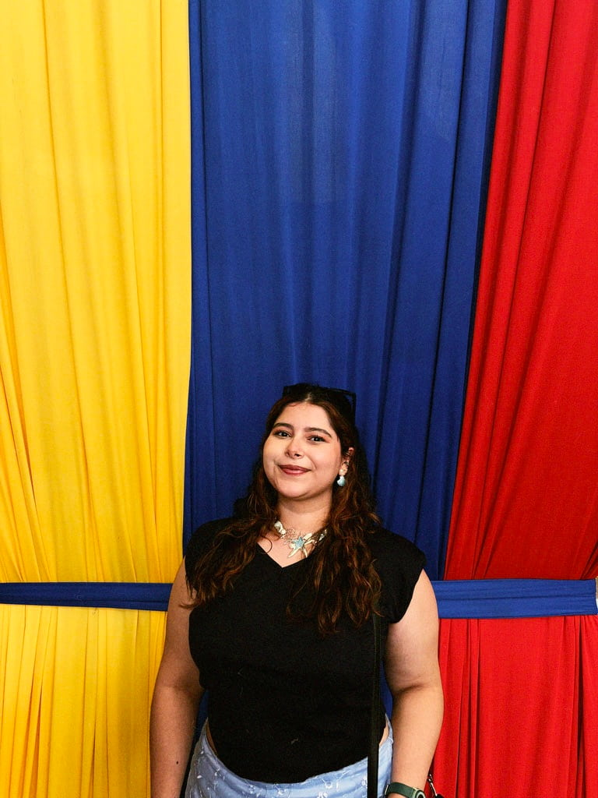

Maria Del Mar Hernandez | WDD 130

Hi everyone! My name is Mar, and I was born and raised in Cali, Colombia. I'm 25 years old, happily married, and have a bachelor's degree in Biology. I played the cello for five years, and I love dancing, singing, and drawing. My biggest weakness is Reese's chocolate and red berry ice cream! I'm currently working as a Project Coordinator at Fundación OCEANIDAD, a Colombian NGO focused on marine conservation. I'm leading a shark research project in the Gulf of Tribugá, where we're monitoring sharks using environmental DNA (eDNA). I'm excited to learn with all of you and get to know everyone better!